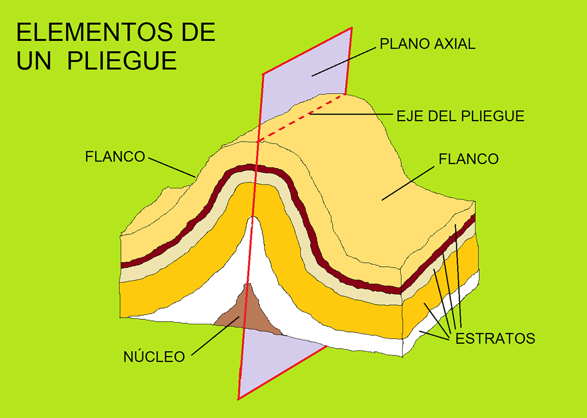
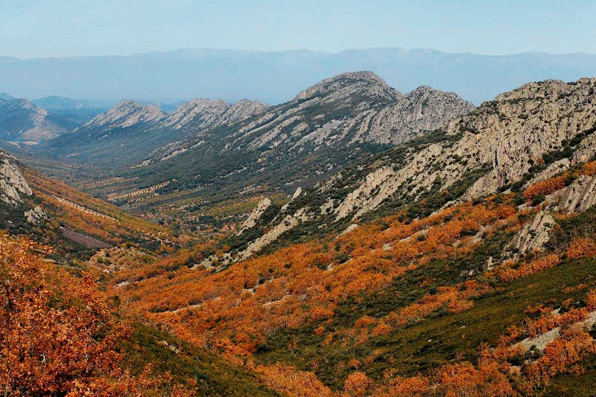
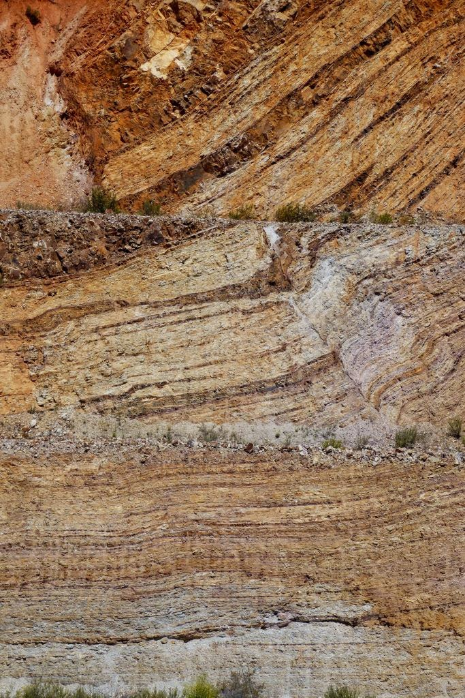

Patrimonio Natural
Sinclinal de Herrera
Escuchar audioguía
-0:00
Una formación geológica espectacular que define el paisaje.
El Sinclinal de Herrera es una de las formaciones geológicas más impresionantes de la comarca. Esta estructura en forma de "U" o cubeta es el resultado de millones de años de procesos tectónicos y erosión, creando un relieve apalachense característico de La Siberia.
Un paisaje de contrastes
El sinclinal ofrece un relieve abrupto con crestas de cuarcita que sobresalen en el horizonte. Estas formaciones no solo son geológicamente interesantes, sino que también albergan una flora y fauna muy específica.Miradores naturales
Desde las zonas más altas del sinclinal se obtienen vistas panorámicas de toda la comarca, incluyendo los grandes embalses y las extensas dehesas. Es un lugar predilecto para:Importancia geológica
El Sinclinal de Herrera es un libro abierto sobre la historia de la Tierra. Sus estratos revelan los antiguos mares que cubrían esta zona hace cientos de millones de años, convirtiéndolo en un punto de interés para científicos y amantes de la naturaleza por igual.Galería de fotos


